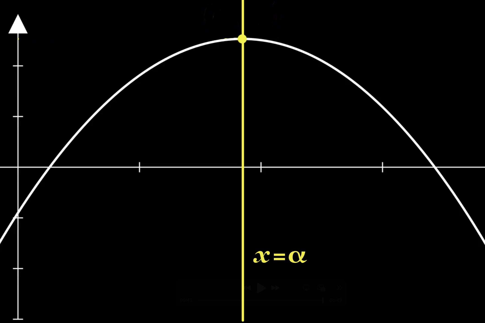
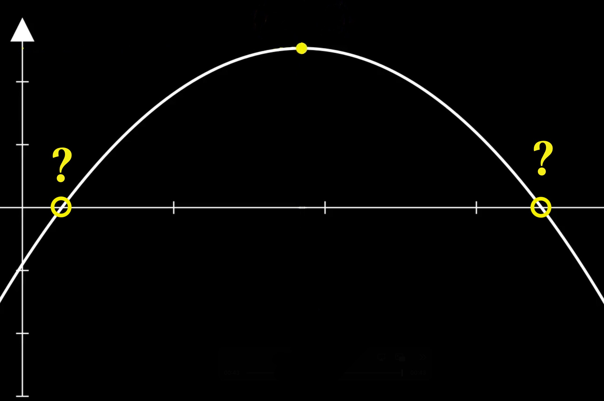
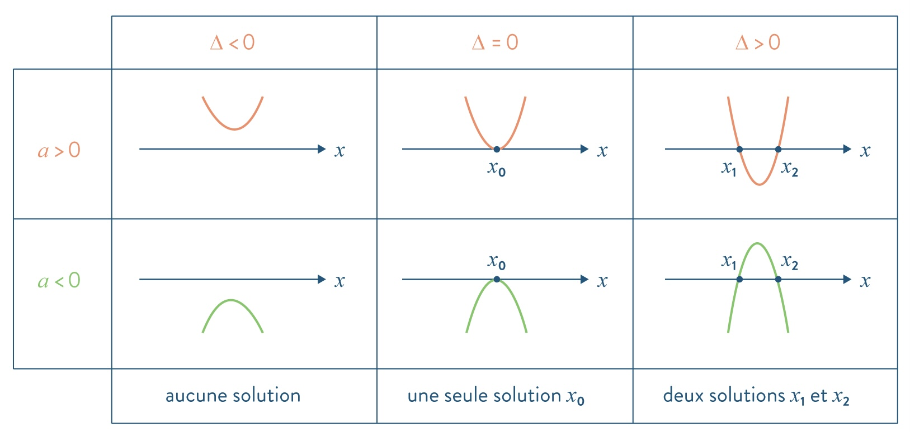

Chapitre 1 : Fonctions polynômes du second degré
Lycée Marcelin Berthelot -
Aymé Petit
I/ Définition et forme canonique
Une fonction polynôme du second degré est une fonction \(f\) définie sur \(\mathbb{R}\) dont une expression est
\( f(x) = ax^2 + bx + c \)
forme développée
où \( a, b, c \in \mathbb{R} \) et \( a \ne 0 \).
La courbe représentative de \(f\) est une parabole.
\(a=1,5 \gt 0\)
\(a=-2 \lt 0\)
Dans la suite du cours, \(f(x)=ax^2+bx+c\)
avec \(a,b,c\in\mathbb{R}\) et \(a\neq 0\).
Dans la suite du cours, \(f(x)=ax^2+bx+c\)
avec \(a,b,c\in\mathbb{R}\) et \(a\neq 0\).
Le sommet de la parabole a pour coordonnées \( (\alpha;\beta) \).
II/ Variations
Si \(a\gt 0\) alors \(f\) est strictement :
décroissante sur \( \big]-\infty\ ;\ \alpha\big] \) &
croissante sur \( \big[\alpha\ ;\ +\infty\big[ \).
II/ Variations
Si \(a\gt 0\) alors \(f\) est strictement :
décroissante sur \( \big]-\infty\ ;\ \alpha\big] \) &
croissante sur \( \big[\alpha\ ;\ +\infty\big[ \).

\(a\gt0\) parabole tournée vers le haut
Si \(a\lt 0\) alors \(f\) est strictement :
croissante sur \( \big]-\infty\ ;\ \alpha\big] \) &
décroissante sur \( \big[\alpha\ ;\ +\infty\big[ \).
Si \(a\lt 0\) alors \(f\) est strictement :
croissante sur \( \big]-\infty\ ;\ \alpha\big] \) &
décroissante sur \( \big[\alpha\ ;\ +\infty\big[ \).
\(a\lt0\) parabole tournée vers le bas
La parabole représentative de \(f\) a pour axe de symétrie la droite d'équation \(x=\alpha\).
La parabole représentative de \(f\) a pour axe de symétrie la droite d'équation \(x=\alpha\).

III/ Équations du second degré
Objectif :
Trouver les points d'intersection entre la parabole et l'axe des abscisses.

III/ Équations du second degré
Objectif :
Résoudre l'équation \(f(x)=0\).
III/ Équations du second degré
1) Résolution
Une
équation du second degré est une équation de la forme
\[ ax^2+bx+c=0 \quad (*) \]
(avec \(a\neq0\) et \(b,c\in\mathbb{R}\)).
\( \Delta=b^2-4ac \) est appelé le discriminant du trinôme \( ax^2+bx+c \).
✦
Si $\Delta \lt 0$, l’équation \( (*) \) n’a pas de solution réelle.
✦
Si $\Delta = 0$, l’équation \( (*) \) a une unique solution : \( x_0 = \alpha \).
✦
Si $\Delta \gt 0$, l’équation \( (*) \) a deux solutions réelles distinctes :
\( x_1 = \dfrac{-b - \sqrt{\Delta}}{2a} \quad \text{et} \quad x_2 = \dfrac{-b + \sqrt{\Delta}}{2a} \)
Image à coller dans votre cahier.
Image à coller dans votre cahier.

2) Racines et factorisation
Une solution de $(*)$ s'appelle une racine (de $f$).
· Lorsque $\Delta \lt 0$, $f$ ne se factorise pas dans \( \mathbb{R} \).
· Lorsque $\Delta = 0$, $f$ se factorise en
$ a(x - x_0)^2 $.
· Lorsque $\Delta \gt 0$, $f$ se factorise en
$ a(x - x_1)(x - x_2) $.
Soit \( x_1 \) et \( x_2 \) deux réels, et on pose
\( S = x_1 + x_2 \) et
\( P = x_1 \times x_2 \).
✦ Si \( x_1 \) et \( x_2 \) sont solutions de \( x^2 + bx + c = 0 \), alors \( b = -S \) et \( c = P \).
✦ Les solutions de l’équation du second degré \( x^2 - Sx + P = 0 \) sont \( x_1 \) et \( x_2 \).
Soit \( x_1 \) et \( x_2 \) deux réels, et on pose
\( S = x_1 + x_2 \) et
\( P = x_1 \times x_2 \).
✦ Si \( x_1 \) et \( x_2 \) sont solutions de \( x^2 + bx + c = 0 \), alors \( b = -S \) et \( c = P \).
✦ Les solutions de l’équation du second degré \( x^2 - Sx + P = 0 \) sont \( x_1 \) et \( x_2 \).
❧
Fin de Chapitre
❧